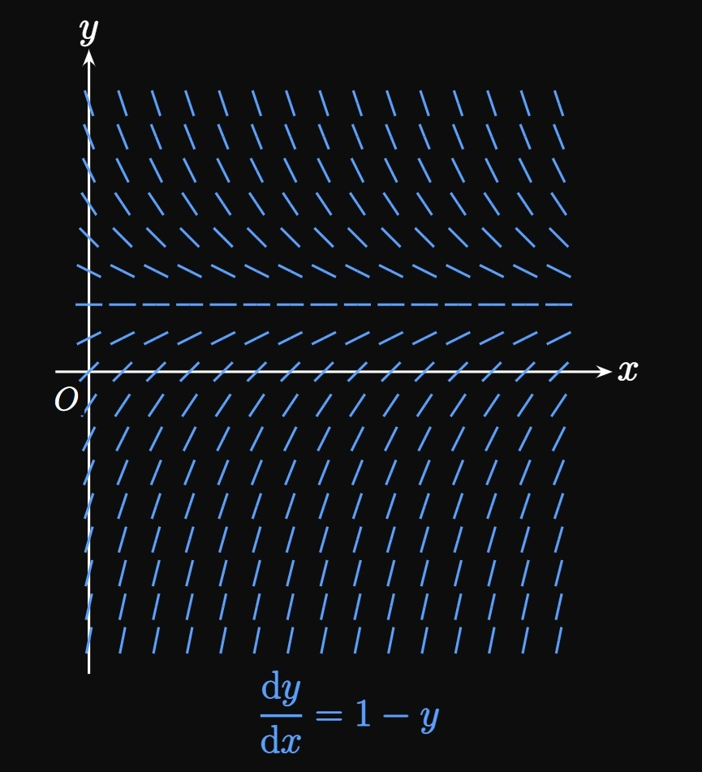

Second-order.
The highest-degree derivative that appears in the equation is \(2,\)
due to the term \(8 \, \textderivOrder{y}{x}{2}.\)
First-order.
The highest-degree derivative that appears in the equation is \(1,\)
due to the term \(\textDeriv{y}{x}.\)
Third-order.
The highest-degree derivative that appears in the equation is \(3,\)
due to the term \(y'''.\)
Sixth-order.
The highest-degree derivative that appears in the equation is \(6,\)
due to the term \(4 \, y^{(6)}.\)
EXERCISE 2
For
\[\ds \deriv{y}{x} = 4y \scoll y = 2e^{4x}\]
determine whether the function is a solution to the differential equation.
SOLUTION
Differentiating \(y = 2e^{4x},\) we see
\[\deriv{y}{x} = 8 e^{4x} \equalsCheck \underbrace{4 \par{2e^{4x}}}_{4y} \pd\]
Thus, the differential equation is satisfied, so \(y = 2e^{4x}\) is a solution.
EXERCISE 3
For
\[\ds \deriv{y}{x} = 6x \scoll y = x^2 + 3\]
determine whether the function is a solution to the differential equation.
SOLUTION
We see
\[\deriv{y}{x} = 2x \ne 6x \cma\]
so the differential equation is not satisfied.
Accordingly, \(y = x^2 + 3\) is not a solution.
EXERCISE 4
For
\[\ds 2y'' - 9y' + y - 8 = 0 \scoll y = 8\]
determine whether the function is a solution to the differential equation.
SOLUTION
Because \(y = 8\) is constant,
we have \(y'\) \(= y'' = 0.\)
We therefore see
\[
\underbrace{2(0)}_{2y''} - \underbrace{9(0)}_{9y'} + \underbrace{8}_{y} - 8 \equalsCheck 0 \pd
\]
So \(y = 8\) is a solution.
EXERCISE 5
For
\[\ds y'' + y' = 0 \scoll y = 7e^{-x} + 4\]
determine whether the function is a solution to the differential equation.
SOLUTION
Differentiating shows
\[
\ba
y' &= -7e^{-x} \cma \nl
y'' &= 7e^{-x} \pd
\ea
\]
Then we see
\[\underbrace{7e^{-x}}_{y''} + \underbrace{\par{-7e^{-x}}}_{y'} \equalsCheck 0 \cma\]
so the differential equation is satisfied.
Hence, \(y = 7e^{-x} + 4\) is a solution.
EXERCISE 6
For
\[\ds P''(t) = 5P(t) \scoll P(t) = 4 \cos t\]
determine whether the function is a solution to the differential equation.
SOLUTION
Differentiating \(P,\) we see
\[P'(t) = -4 \sin t \implies P''(t) = -4 \cos t \pd\]
The differential equation is not satisfied:
\[\underbrace{-4 \cos t}_{P''(t)} \ne \underbrace{5 \par{-4 \cos t}}_{5P(t)} \pd\]
Thus, \(P(t) = 4 \cos t\) is not a solution.
determine whether the function is a solution to the differential equation.
SOLUTION
We note that \(\textderiv{y}{t} = 3e^{-3t}.\)
The differential equation is satisfied because
\[\underbrace{3e^{-3t}}_{\textderiv{y}{t}}
\equalsCheck \underbrace{5 - 3 \par{\frac{5}{3} - e^{-3t}}}_{5 - 3y} \pd\]
So \(y = 5/3 - e^{-3t}\) is a solution.
EXERCISE 8
In many phenomena, a quantity changes at a rate proportional to itself.
The differential equation that models this behavior is
\[\deriv{y}{x} = ky\]
for some constant \(k.\)
Show that the family of exponential functions \(y = Ce^{kx}\) satisfies this differential equation.
(We will examine exponential models in Section 8.3.)
SOLUTION
Differentiating the exponential function, we see
\[\deriv{y}{x} = C \par{ke^{kx}} \equalsCheck \underbrace{k \par{Ce^{kx}}}_{4y} \pd\]
Thus, the differential equation is satisfied by \(y = Ce^{kx}.\)
EXERCISE 9
Show that the particular solution to the initial-value problem
\[y' = x + 2y \cmaa y(1) = 3\]
is
\[y = \tfrac{1}{4} \par{-2x + 15e^{2x - 2} - 1} \pd\]
SOLUTION
Differentiating, we see
\[y' = -\tfrac{1}{2} + \tfrac{15}{2} e^{2x - 2} \pd\]
We see
\[\underbrace{-\tfrac{1}{2} + \tfrac{15}{2} e^{2x - 2}}_{y'}
\equalsCheck x + \underbrace{2 \par{\tfrac{1}{4} \par{-2x + 15e^{2x - 2} - 1}}}_{2y} \pd\]
In addition, the initial condition \(y(1) = 3\) is met:
\[y(1) = \tfrac{1}{4} \par{-2(1) + 15e^{2(1) - 2} - 1} \equalsCheck 3 \pd\]
Thus, the given function solves the initial-value problem
because both the differential equation and initial condition are satisfied.
EXERCISE 10
Determine whether each function is a solution
to the fourth-order differential equation
\[y^{(4)} - 16y = 0 \pd\]
\[\ds \deriv{y}{x} = \tfrac{1}{4} y \cmaa y(-3) = 4 \scoll y(5) \text{ using } h = 2\]
use Euler's Method to approximate the value given
the differential equation, initial condition, and step size \(h\).
SOLUTION
We begin the approximations at the given point \(y(-3) = 4.\)
To each estimate \(y_n,\) we add on the step size \(h = 2\) multiplied by the derivative evaluated at
\(\par{x_n, y_n}\) until we reach \(x = 5.\)
Doing so provides the following estimates:
\[
\baat{2}
y(-1) &\approx y_1 &&= 4 + 2 \parbr{\tfrac{1}{4} (4)} = 6 \cma \nl
y(1) &\approx y_2 &&= 6 + 2 \parbr{\tfrac{1}{4} (6)} = 9 \cma \nl
y(3) &\approx y_3 &&= 9 + 2 \parbr{\tfrac{1}{4} (9)} = 13.5 \cma \nl
y(5) &\approx y_4 &&= 13.5 + 2 \parbr{\tfrac{1}{4} (13.5)} = \boxed{20.25}
\eaat
\]
EXERCISE 12
For
\[\ds \deriv{y}{t} = \frac{2}{t} \cmaa y(1) = 2 \scoll y(3) \text{ using } h = 0.5\]
use Euler's Method to approximate the value given
the differential equation, initial condition, and step size \(h\).
SOLUTION
We begin the approximations at the given point \(y(1) = 2.\)
To each estimate \(y_n,\) we add on the step size \(h = 0.5\) multiplied by the derivative evaluated at
\(\par{t_n, y_n}\) until we reach \(t = 3.\)
Doing so provides the following estimates:
\[
\baat{2}
y(1.5) &\approx y_1 &&= 2 + 0.5 \parbr{(\tfrac{2}{1})} = 3 \cma \nl
y(2) &\approx y_2 &&= 3 + 0.5 \parbr{(\tfrac{2}{1.5})} = \tfrac{11}{3} \cma \nl
y(2.5) &\approx y_3 &&= \tfrac{11}{3} + 0.5 \parbr{(\tfrac{2}{2})} = \tfrac{25}{6} \cma \nl
y(3) &\approx y_4 &&= \tfrac{25}{6} + 0.5 \parbr{(\tfrac{2}{2.5})} = \boxed{\tfrac{137}{30}}
\eaat
\]
EXERCISE 13
For
\[\ds \deriv{y}{x} = x^2 \, y \cmaa y(2) = 1 \scoll y(3.5) \text{ using } h = 0.5\]
use Euler's Method to approximate the value given
the differential equation, initial condition, and step size \(h\).
SOLUTION
We begin the approximations at the given point \(y(2) = 1.\)
To each estimate \(y_n,\) we add on the step size \(h = 0.5\) multiplied by the derivative evaluated at
\(\par{x_n, y_n}\) until we reach \(x = 3.5.\)
Doing so provides the following estimates:
\[
\baat{2}
y(2.5) &\approx y_1 &&= 1 + 0.5 \parbr{(2)^2 (1)} = 3 \cma \nl
y(3) &\approx y_2 &&= 3 + 0.5 \parbr{(2.5)^2 (3)} = 12.375 \cma \nl
y(3.5) &\approx y_3 &&= 12.375 + 0.5 \parbr{(3)^2 (12.375)} = \boxed{68.0625}
\eaat
\]
EXERCISE 14
For
sketch the particular solution curve through the given point.
SOLUTION
We first plot the point \((-2, 3)\)
and trace the curve such that it is parallel to the nearby line segments.
The slopes provide a blueprint for the direction in which the curve is oriented.
Doing so produces the curve in the figure below.
EXERCISE 15
For
sketch the particular solution curve through the given point.
SOLUTION
The particular solution curve must pass through the point \((-1, 1).\)
We begin at this point
and trace the curve such that it is parallel to the nearby line segments.
The slopes provide a blueprint for the direction in which the curve is oriented.
Doing so produces the curve in the given image.
EXERCISE 16
For
sketch the particular solution curve through the given point.
SOLUTION
The particular solution curve must pass through the point \((2, 1).\)
We begin at this point
and trace the curve such that it is parallel to the nearby line segments.
The slopes provide a blueprint for the direction in which the curve is oriented.
Doing so produces the curve in the given image.
EXERCISE 17
For
sketch the particular solution curve through the given point.
SOLUTION
The particular solution curve must pass through the point \((4, -2).\)
We begin at this point
and trace the curve such that it is parallel to the nearby line segments.
The slopes provide a blueprint for the direction in which the curve is oriented.
Doing so produces the curve in the given image.
EXERCISE 18
In an autonomous first-order differential equation,
the rate does not depend on the independent variable;
that is, it can be written in the form
\[\deriv{y}{x} = f(y) \pd\]
Classify whether the following differential equations are autonomous.
\(\ds y' = xy \sin y\)
\(\ds y' = A\) for any constant \(A\)
\(\ds 3y' + 6y + 7 = 0\)
\(\ds y' + x = 2 - y\)
SOLUTION
No.
The derivative \(y'\) depends on \(x,\)
so the differential equation is not autonomous.
Yes.
The rate \(y'\) does not include \(x.\)
Yes.
We solve for \(y',\) obtaining
\[y' = -2y - \tfrac{7}{3} \cma\]
which does not depend on \(x.\)
No.
Solving for \(y'\) gives
\[y' = 2 - x - y \cma\]
which includes \(x.\)
The differential equation therefore is not autonomous.
EXERCISE 19

The slope field for the differential equation \(y' = 1 - y\) is shown in
Figure 8.
Let \(y = f(x)\) be the particular solution to the differential equation, with \(f(0) = 2.\)
Sketch the curve \(y = f(x).\)
Use Euler's Method with step size \(h = 0.1\) to estimate \(f(0.3).\)
An equilibrium solution has a derivative of \(0\)
at all \(x.\)
Identify the equilibrium solution for \(y' = 1 - y.\)
What is \(\lim_{x \to \infty} f(x) \ques\)
SOLUTION
To sketch a particular solution curve,
we begin at the given point \((0, 2).\)
We extend the curve in the direction of the line segments.
Using Euler's Method from \(x = 0\) to \(x = 0.3,\)
we attain the following approximations:
\[
\baat{2}
f(0.1) &\approx y_1 &&= 2 + 0.1 \parbr{1 - 2} = 1.9 \cma \nl
f(0.2) &\approx y_2 &&= 1.9 + 0.1 \parbr{1 - 1.9} = 1.81 \cma \nl
f(0.3) &\approx y_3 &&= 1.81 + 0.1 \parbr{1 - 1.81} = \boxed{1.73}
\eaat
\]
The derivative is \(0\) at all \(x\)
if the solution curve is a horizontal line,
that is, for \(\boxed{y = 1}.\)
(At this point, \(\textderiv{y}{x}\) \(= 1 - 1\) \(= 0.\))
As we continue making \(x\) larger and larger,
the line segments decrease in slope until \(y = 1.\)
So \(\lim_{x \to -\infty} f(x) = \boxed{1}.\)
EXERCISE 20
In the slope field for \(y' = 1/x\) and \(x \gt 0,\)
the line segments' slopes are independent of \(y\) and decrease as \(x\) increases,
as shown by Figure 9.
Sketch the particular solution curve that passes through the point \((1, 2).\)
Then use integration to solve the differential equation and therefore determine the identity of the graph.
SOLUTION
We begin the particular solution curve at the point \((1, 2)\)
and follow the direction of the line segments.
This curve decreases in slope as \(x\) increases.
Now we find the identity of this slope curve by integration
(using the methods from Section 4.1):
The general solution to the differential equation \(y' = 1/x\) is
\[y = \int \frac{1}{x} \di x = \ln \abs x + C \pd\]
(We ignore the absolute value bars because the slope field is restricted to \(x \gt 0\)).
Substituting the initial condition \(y(1) = 2\) shows
\[y(1) = \ln 1 + C = 2 \implies C = 2 \pd\]
The particular solution (and the identity of the curve) is therefore
\[\boxed{y = 2 + \ln x}\]
EXERCISE 21
In a circuit, an inductor is a device that opposes a change in current.
A battery of electromotive force \(20\) volts is connected to a circuit with resistance \(10\) ohms
and inductance \(5\) henries (Figure 10).
Let \(I\) be the circuit's current, which changes with time \(t,\) measured in seconds.
The voltage drops are \(10 I\) across the resistor and \(5 \, \textderiv{I}{t}\) across the inductor.
Applying one of Kirchhoff's Laws gives the differential equation
\[20 - 10I - 5 \deriv{I}{t} = 0 \pd\]
The initial current is \(0\) amps.
Using Euler's Method with step size \(h = 0.25,\)
approximate the current after \(1\) second has elapsed.
What is the current after a very long time (that is, as \(t \to \infty\))?
The particular solution to the differential equation turns out to be
\[I(t) = 2 \par{1 - e^{-2t}} \pd\]
Verify this result.
Does this function make physical sense?
SOLUTION
We have the initial condition \(I(0) = 0.\)
Let's rewrite the given differential equation as
\[\deriv{I}{t} = 4 - 2I \pd\]
The first step of Euler's Method gives
\[I_1 = 0 + 0.25 \parbr{4 - 2(0)} = 1 \un A \pd\]
Likewise, subsequent approximations are as follows:
\[
\ba
I_2 &= 1 + 0.25 \parbr{4 - 2(1)} = 1.5 \un A \cma \nl
I_3 &= 1.5 + 0.25 \parbr{4 - 2(1.5)} = 1.75 \un A \cma \nl
I(1) \approx I_4 &= 1.75 + 0.25 \parbr{4 - 2(1.75)} = \boxed{1.875 \un A}
\ea
\]
We see \(\textderiv{I}{t} \to 0\) as \(I \to 2,\)
meaning \(I\) cannot increase past \(2 \un A.\)
Thus, the current after a very long time is \(\boxed{2 \un A}.\)
Differentiating \(I,\) we attain
\[I'(t) = 4e^{-2t} \pd\]
We then see
\[20 - \underbrace{10 \parbr{2\par{1 - e^{-2t}}}}_{10 I}
- \underbrace{5 \par{4e^{-2t}}}_{5 \, \textderiv{I}{t}}
\equalsCheck 0 \pd\]
In addition, the initial condition \(I(0) = 0\) is met:
\[I(0) = 2 \par{1 - e^0} \equalsCheck 0 \pd\]
Hence, \(I(t) = 2 \par{1 - e^{-2t}}\) is a particular solution
because it satisfies the differential equation with \(I(0) = 0.\)
The solution makes physical sense because the inductor gradually allows more
current to flow in the circuit.
Initially, the inductor opposes all current flow
but eventually allows the current to grow to its maximum of \(2 \un A.\)
With this behavior, inductors are used as shut-off devices—for example,
in surge protectors—to prevent electronic damage by a current overload.